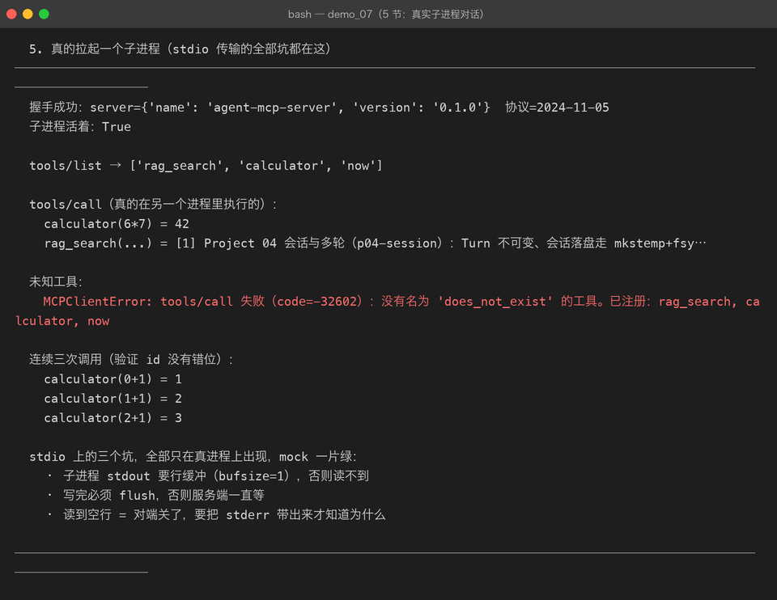

Milestone 08 — MCP Server：把工具提供出去
Milestone 07 只管消息长什么样。这一章是真的把工具提供出去：
``
bash python -m agent.mcp.server # 它就挂在 stdio 上等人来问``
1. 一个必须想清楚的设计：错误分两类
MCP 把错误分成两路，混用会让客户端完全没法处理：
| 类型 | 含义 | 例子 |
|---|---|---|
| JSON-RPC error | 协议 / 调用层面的问题：调用方该改代码 | 方法不存在、参数不合法、工具名没注册 |
result.isError | 工具本身执行了但失败了：这是工具的一次正常结果 | 查不到、算式非法、超时 |
第二条很容易被写成第一条。区别在哪：
工具名不存在 → 调用方该改代码（是 bug），走 JSON-RPC error
查不到内容 → 这是工具的一次正常结果，模型看到后应该换个词再查所以 tools/call 的实现里，工具抛异常要包成 isError=True 的 content 返回， 而不是往外抛 JSON-RPC error。否则就退化成 Milestone 01 讲过的那件事： 把「一次失败」变成「整轮任务被打死」。
真实输出（demos/out/demo_07_mcp.txt 第 4 节）：
{ "result": {"content": [{"type": "text", "text": "[工具执行失败] boom: 查不到"}],
"isError": true} } ← 工具执行失败：走 result
{ "error": {"code": -32602, "message": "没有名为 'nope' 的工具..."} } ← 工具名不存在：走 error2. 错误码也要选对
「工具名不存在」一开始我抛的是 ValueError，被统一兜底成 -32603（内部错误）。 这是个会误导客户端的错误码：
-32603 服务端内部错误 → 客户端以为服务端崩了，于是重试
-32602 参数不合法 → 客户端正确地知道「改我的参数」所以专门加了 CallError(code, message)，让调用方能明确区分「你错了」和「我错了」。
3. stdio 主循环的两个坑
for line in inp: # ① 逐行读
...
out.write(encode_frame(response))
out.flush() # ② 必须 flush① 不能一次 read() 全读再处理 —— 客户端是「发一条、等一条」， 你等 EOF 就等于永远等不到（它的 stdin 还开着）。
② 不 flush 客户端会一直等 —— stdio 是块缓冲的，写满 4KB 才真正发出去。 这个错的表现是「客户端卡住不动」，而不是报错，非常难查。
退出时机：stdin 关闭（EOF）就该退出。客户端进程没了，服务端留着没意义。
4. 真实跑起来

default_server() 把 Project 05 的内置工具（rag_search / calculator / now） 全部通过 MCP 暴露。这一步的意义：这些工具不再只能被同一个进程里的 Agent 调用了。
5. 踩到的坑
坑 1：Tool.schema() 返回的是完整外壳。 本项目的约定是 {"type": "function", "function": {...}}（Milestone 03 修 422 时定的）。 MCP 要的是内层的纯 JSON Schema，所以要剥掉外壳：
outer = tool.schema()
inner = outer.get("function", outer) # 剥壳一开始直接取 schema["parameters"] 拿到的是 None，注册出来的工具参数全空。 服务端不该把 LLM 的形状泄漏到协议里 —— 它可能同时服务于别的客户端， 那些客户端根本不知道 "function" 是什么。
坑 2：lambda **kw, _t=tool: ... 是语法错误。 关键字参数必须放在 **kwargs 之前：lambda _t=tool, **kw: _t.run(**kw)。
6. 结论
- 协议错误与工具失败是两回事，前者让调用方改代码，后者让模型换个参数。
- 错误码要选对，否则客户端会对着不该重试的错误发起重试。
- stdio 主循环必须逐行读 + 每次 flush。
7. 代码位置
| 文件 | 职责 |
|---|---|
src/agent/mcp/server.py | MCPToolSpec / MCPServer / CallError / run_stdio / default_server |
tests/test_mcp.py | TestServerHandshake / TestServerTools / TestServerStdio（15 项） |
demos/demo_07_mcp.py | 第 3–5 节 |
8. 版本
v0.8 → v0.9，MCP Server 落地，工具跨进程可用；测试 230 passed。